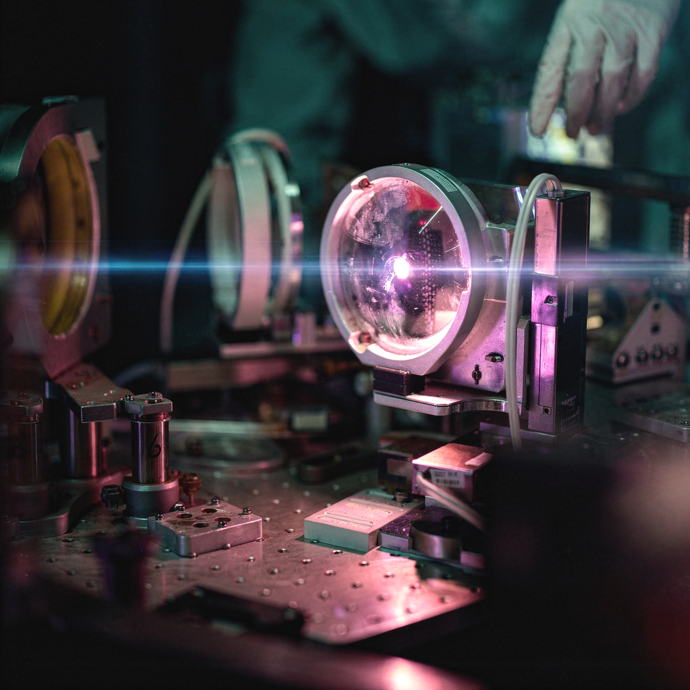

Plasma-based computing
Exploring the world of
electromagnetism.
Visual data captures less than 0.005% of the electromagnetic spectrum. We build models that navigate the other 99.99%.

Bridging the
sim-to-real gap.
How physical systems behave in simulation does not accurately reflect their behavior in the real world.
The sim-to-real gap in developing complex hardware systems can be attributed to two main failure modes. The first is that of compounding approximation errors when iterative numerical solves are used to approximate long trajectories of highly nonlinear systems sensitive to truncation errors, approximate boundary conditions, and sparse solves. The second is a result of the modeling choices that engineers must make in designing the simulation; mesh resolution, domain truncation, and which variables to take into account are all design decisions that propagate into a model’s understanding of the physical world.
As a consequence, policies trained on such simulated environments learn the artifacts of the simulator rather than real-world physics, leading to degraded performance once deployed in hardware. Current solutions to this problem primarily rely on iterating through cycles of training in simulation, testing in hardware, collecting data, and improving the simulation using collected data. However, for domains where data collection and hardware tests are costly—such as nuclear fusion, large scale metamaterials design, and radar systems architecture—the problem remains intractable.
Plasmas as a substrate to simulate electromagnetic environments in the real world.
Instead of using numerical methods to simulate and verify learned models of the physical world, we developed a plasma-based device that enables full spectrum in-situ electromagnetic (EM) simulation of arbitrary material compounds. A plasma’s EM response can be tuned via the current that flows through it, which allows us to control how the plasma elements in our device interact with surrounding and injected EM fields.
By configuring our device to match the properties of a target material, we are able to capture the electromagnetic behavior of that material in real time, simulating its response to external field perturbations and source injections. As in-device measurements and reconfiguration operate on a nano-to-microsecond timescale, what this gives us is a rapid hardware prototyping substrate that can be wired into any training or simulation pipeline for hardware systems development. The resulting stack effectively bridges the sim-to-real gap by making the simulation real—literally.

Redefining
hardware-in-the-loop testing.
Enabling in-situ modeling of plasma instability inside fusion reactors.
Our current projects focus on methods for fusion reactor optimization. Magnetic confinement devices like tokamaks work to sustain fusion reactions by controlling turbulent plasma whose dynamics are governed by highly nonlinear PDEs. The multi-scale coupling between transport, radiation, and electromagnetic fields makes full-fidelity numerical simulation prohibitively costly in terms of time and compute.
Our approach circumvents the bottlenecks of in-silico simulation as well as the time and compute costs of traditional RL pipelines for complex systems. Our device integrates directly with our own proprietary Gymnasium-style training environment: the control stack stays in software while the simulation runs get offloaded onto our plasma-native hardware—trading what would’ve been high-dimensional PDE solves for accurate in-situ measurements that complete in wall-clock times of microseconds per iteration.
Shaping domains
where it matters most.
Our founding team is made up of lead researchers from the Stanford Plasma Physics Lab and Prof. Mark Cappelli, director of Stanford Engineering Physics.
We bring together a team of industry experts in nuclear fusion with backgrounds spanning AI, physics, math, systems engineering, electrical engineering, and robotics.
Our mission at Phos is not to make incremental progress on problems that humans can already solve—our mission is to develop the tools that enable humans to solve problems that no one in history has ever been able to solve.
Connect with
our team.
Building in fusion, metamaterials, or radar systems? We’d like to hear from you.
susan@phosteam.com